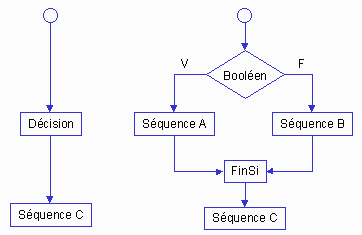
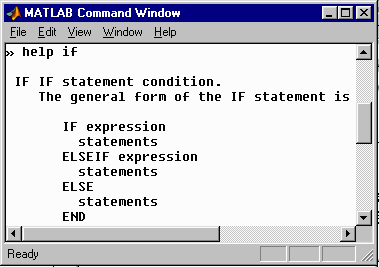
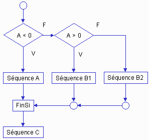

Décision – plusieurs choix
Décision imbriquée
Certaines situations nécessitent plusieurs volets pour choisir une séquence appropriée
d'instructions. Reprenons l'exemple initial de l'énoncé binaire :
|
Pseudo-code |
Traduction
Matlab |
|
Lire
A |
|
En l'examinant, on constate que A peut valoir zéro. L'énoncé binaire n'est pas adéquat pour répondre aux nuances de la question posée. Il faut apporter un correctif. Rappelons qu'un énoncé de décision peut être représenté par une séquence :

On peut aussi remplacer une séquence par un énoncé de décision.
Exemple :

|
Décision
imbriquée |
Traduction
Matlab |
|
i
(booléen1) faire |
|
- La décision imbriquée remplace la
“ séquence B ”.
- Les instructions composant chacun des énoncés de
décision sont alignées entre elles (obligatoire dans le cours).
- Chacun des énoncés de décision se termine par FinSi.
- Chacune des séquences est décalée de trois espaces pour
faciliter la lisibilité (obligatoire dans le cours). Noter que l'éditeur
de Matlab effectue automatiquement cette mise en forme.
Structure de décision à branches multiples
La formulation complète est plus lisible que l'écriture d'un énoncé de décision imbriquée. La forme complète du if est la suivante :

L'exemple précédent est repris dans cette structure:

L'aspect séquentiel de la décision est manifeste. On exécute chacune des branches les unes à la suite des autres jusqu'à ce qu'une condition soit satisfaite
Comparaison entre les deux approches :
|
Décision
imbriquée |
Traduction
Matlab |
|
Si
(booléen1) faire |
|
|
Décision
à branches multiples |
Traduction
Matlab |
|
Si
(booléen1) faire |
|
Dès qu'une condition est remplie, la séquence s'exécute et l'énoncé de décision se termine. Les autres branches ne sont pas exécutées.
- Les mots if, elseif, else et end font partie de l'instruction de décision. Les
instructions comprises entre ces mots sont décalées vers la droite.
- Les mots if, else, end ne peuvent pas être
répétés dans l'instruction de décision.
- La branche else est optionnelle. Dans la
structure de décision multiple, le mot else signifie dans tous
les autres cas.
- Il peut y avoir plus d'une instruction SinonSi elseif.
Voici un exemple comportant plusieurs instructions elseif :
|
Décision
à branches multiples |
Traduction
Matlab |
|
Lire A |
|
L'ordre des instructions elseif est déterminant. Par
exemple, en échangeant l'ordre de
elseif(A > 5000) et elseif(A > 0),
les autres instructions elseif ne seraient
jamais exécutées. Expérimenter en déplaçant des instructions ou en mettant un
espace entre le else
et le if.
Décaler les instructions – Chacune des séquences est décalée de trois espaces pour faciliter la lisibilité (obligatoire dans le cours). Noter que l'éditeur de Matlab effectue automatiquement cette mise en forme. L'éditeur comporte également des instructions pour corriger une présentation inadéquate.
Ne jamais ajouter d'instruction sur la ligne contenant l'instruction else.
Énoncé de décision
à branches multiples - résumé
if(Booléen)
“ séquence obligatoire ”
elseif(Booléen) “ branche
optionnelle ”
“ séquence ”
else(Booléen) “ branche
optionnelle, mais presque obligatoire ”
“ séquence ”
end
Vous avez maintenant plusieurs outils pour effectuer des décisions :
1) décision binaire “ if-else-end ”,
2) décision binaire imbriquée,
3) décision à branches multiples “ if-elseif-else-end ”
4) décision “ switch-case-otherwise ”
(option)
Énoncé switch-case-otherwise-end
“ Non matière à examen ”
La décision “ if-elseif-else-end ”
se plie à la plupart des situations de branchements multiples. Il existe une
autre instruction, accomplissant la même tâche, plus expressive et plus
conviviale. Si vous avez déjà programmé, prenez quelques minutes pour étudier
la structure switch que l'on retrouve sous une forme assez similaire en
Fortran et en C. Documentation :

Exemple
|
|
Exemple
d'exécution |
Note : la fonction sign retourne la valeur -1, 0 ou +1, selon que l'argument est négatif, zéro ou positif.
Exemple
Calculer la surface d'un rectangle, d'un triangle ou d'une ellipse.
L'utilisateur doit identifier l'objet géométrique.
|
|
Exemple
d'exécution : |